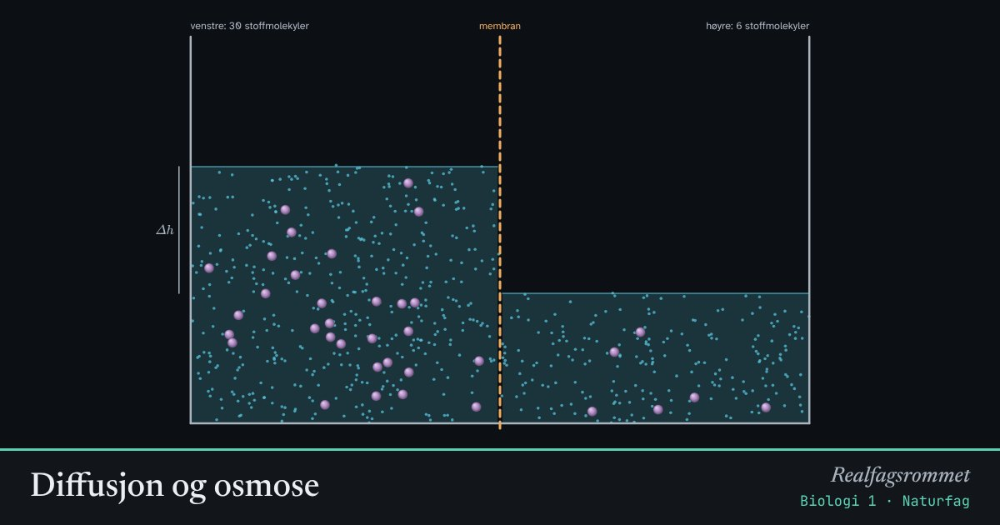

Diffusjon og osmose
Vann beveger seg gjennom en membran mot siden med mest oppløst stoff. Det kalles osmose. Store molekyler slipper ikke gjennom membranen, og derfor kan vann presses inn i eller trekkes ut av en celle.
Start animasjonen
Formler
Om animasjonen
Diffusjon er at molekyler sprer seg fra høy til lav konsentrasjon fordi de beveger seg tilfeldig. Velger du en membran som slipper alt gjennom, jevner konsentrasjonene seg ut, og vannstanden blir lik.
En halvgjennomtrengelig membran slipper vann gjennom, men ikke de store molekylene. Da går vannet mot siden med mest oppløst stoff, og vannstanden stiger der. Trykket fra den høye vannsøylen stopper til slutt strømmen.
En rød blodcelle har omtrent samme saltinnhold som 0,9 % saltvann. I rent vann (hypoton løsning) suger den til seg vann og kan sprekke. I sjøvann (hyperton) mister den vann og skrumper.
Plantecellen har en stiv cellevegg. I ferskvann presser den seg mot veggen og blir stinn (turgor). I saltvann trekker innholdet seg bort fra veggen: plasmolyse.
Prøv dette
- Hva skjer med vannstanden hvis begge sider har like mye oppløst stoff?
- Hvorfor stopper vannstrømmen før konsentrasjonene er like med en halvgjennomtrengelig membran?
- Hvorfor får man saltvann og ikke rent vann i blodårene på sykehuset?
- Hvorfor visner salat når du har på dressing lenge før du spiser?
Kompetansemål
- Biologi 1: Cellestrukturer og transport over membraner